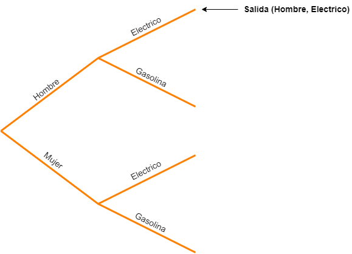
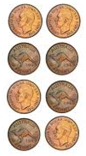
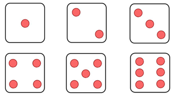
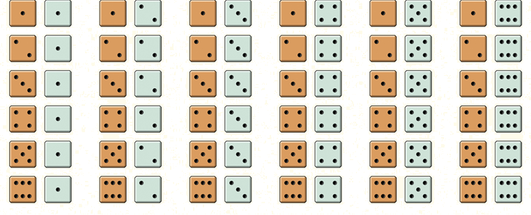
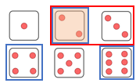

Experimentos y eventos
Contents
import numpy as np
import pandas as pd
from scipy.stats import trim_mean
Experimentos y eventos#
Experimento#
Definición
Un experimento es una operación planificada que se realiza en condiciones controladas. Si el resultado (producto del experimento) no está predeterminado, se dice que el experimento es aleatorio.
Un experimento consiste en un procedimiento y unas observaciones. Por ejemplo un experimento podria ser lanzar una moneda no cargada (simulacion). Esto implica:
Procedimiento: Lanzar una moneda varias veces e ir anotando los resultados en una tabla.
Observaciones: Observar el lado de la moneda (cara o sello) despues de que la moneda es lanzada.
La siguiente tabla muestra algunos ejemplos de experimentos:
Experimento |
Procedimiento |
Observaciones |
|---|---|---|
Lanzar una moneda tres veces |
Lanzar una moneda varias veces e ir apuntando los resultados en una tabla |
Posibles observaciones:
|
Lanzar una par de monedas |
Lanzar un par de monedas varias veces e ir anotando los resultados en una tabla |
Salida (cara/sello) de cada moneda |
Contar el numero de estudiantes que asisten a clase |
Llamar a lista cada clase |
La cantidad de estudiantes que asisten |
Determinar la calidad del suerño |
Medir la hora de acostada y levantada y apuntarlas en una tabla |
Posibles observaciones:
|
Espacio muestral#
Antes de definir el concepto de espacio muestral, es conveniente definir el concepto de salida:
Salida (Outcome)
Una salida (outcome) de un experimento es una de las posibles observaciones de dicho experimento.
Por ejemplo si un experimento consiste en lanzar un dado no cargado, la salida consiste en uno de los posibles valores que cae en la cara.
Espacio muestral
El espacio muestral (\(S\)) de un experimento es el conjunto de todos los resultados posibles.
Existen 3 formas de representar un espacio muestral:
Hacer una lista de posibles resultados.
Crear un diagrama de árbol.
Crear un diagrama de Venn.
Ejemplo 1#
Considere un experimento para investigar si es más probable que los hombres o las mujeres elijan un auto electrico en lugar de uno a gasolina al comprar un Honda Civic en un concesionario de automóviles en particular. El Honda Civic está disponible en ambas variantes. En este experimento, se seleccionará al azar un cliente entre los que compraron un Honda Civic. Se determinará el tipo de vehículo adquirido (electrico o a gasolina) y se registrará el sexo del cliente.
Antes de el cliente es seleccionado, el resultado de este experimento casual es desconocido para nosotros. Sin embargo, sabemos cuáles son los posibles resultados (espacio muestral).
Por ejemplo, si los resultados se representan como una lista tenemos:
Mujer compra auto electrico.
Mujer compra auto a gasoluna.
Hombre compra auto electrico.
Hombre compra auto a gasoluna.
Una forma mas resulmida consiste en representar las salidas anteriores usando pares ordenados de modo que:
S = {(hombre, electrico), (mujer, electrico),
(hombre, gasolina), (mujer, gasolina)}
En la representación en la que se usa el diagrama de arbol para representar espacio muestral para identificar un resultado especifico (en este ejemplo), se recorre el arbol seleccionando primero la rama correspondiente al sexo (Masculino/Femenino) del comprador y luego la rama correspondinete al tipo de vehiculo (Electrico/Gasolina). La siguiente. En la siguiente figura se resalta el caso en el que la salida corresponde a la adquisición de un auto electrico por parte de un hombre:

Como en este caso, en la elección del automovil no importa el orden de la selección, no importa cual rama va primero y cual despues de modo que una representación equivalente se muestra a continuacuón:

Eventos#
Evento
Un evento es cualquier combinación de resultados del espacio muestral asociado a un experimento aleatorio.
Cuando el resultado consisten en exactamente una sola salida, decimos que el evento es simple.
Usualmente se emplean letras mayusculas \((A, B, C,...)\) o letras con subindices \((E_1, E_2, E_3,...)\) para representar eventos.
Ejemplo 2#
Teniendo en cuenta el experimento analizado en el ejemplo 1 (adquisión del onda civic). Podemos definir los siguientes eventos:
M: El auto fue adquirido por un hombre.
F: El auto fue comprado por una mujer.
G: El tipo de carro es de gasolina.
E: El tipo de carro es electrico.
Se pide:
¿Cual es el espacio muestral teniendo en cuenta esta representación?
\(S = \left \{ME, FE, MG, FG \right \}\)
Encuentre los eventos simples de cada caso.
\(E_1 = ME\)
\(E_2 = FE\)
\(E_3 = MG\)
\(E_4 = FG\)
Suponiendo que el evento de interes consiste en todas las salidas cuando un auto electrico es elegido tenemos:
\[electrico = \left \{ME, FE \right \}\]Evento en el que el comprador elegido es mujer:
\[mujer = \left \{FE, FG \right \}\]
Ejemplo 3#
Un experimento consiste en lanzar una moneda no cargada. ¿Cual es el espacio muestral asociado al experimento?
Inicialmente definimos los siguientes eventos:
H: el resultado de lanzar la moneda es cara.
T: el resultado de lanzar la moneda es sello.
De este modo, el espacio muestral del experimento esta dado por:
Ejemplo 4#
Suponga que se lleva a cabo un experimento que consiste en lanzar dos veces una moneda imparcial. Si H, es el evento en el cual el resultado es cara y T es el evento cuyo resultado es sello.
¿Cual es el espacio muestral?
La siguiente figura muestra las difentes posibilidades a la salida:

De este modo, segun lo anterior, el espacio muestral para este experimento es:
\[S = \left \{HH, HT, TH, TT \right \}\]Llenar la siguiente tabla:
Evento
Descripción
Resultado
\(E_1\)
Que salga al menos un sello
\(E_2\)
Que las salidas sean las mismas
\(E_3\)
Que la primera moneda sea cara
A continuación se muestra la tabla llena:
Evento
Descripción
Resultado
\(E_1\)
Que salga al menos un sello
\(E_1 = \left \{TH, HT, TT \right \}\)
\(E_2\)
Que las salidas sean las mismas
\(E_2 = \left \{HH, TT \right \}\)
\(E_3\)
Que la primera moneda sea cara
\(E_3 = \left \{HH, HT \right \}\)
Es posible crear nuevos eventos a partir de eventos ya especificados tal y como se muestra a continuación:
Operaciones sobre eventos
Dados dos eventos \(A\) y \(B\):
Not \(A\): Evento que contiene todas las salidas del experimento que no estan en el evento \(A\). Not \(A\) es algunas veces llamado Complemento de \(A\) y usualmente es denotado como: \(A^c\), \(A'\) o \(\bar{A}\).
\(A\) or \(B\): Evento que consiste de todas las salidas del experimento que estan al menos en uno de los dos eventos, esto es, que estan en \(A\), en \(B\) o en ambos. \(A\) or \(B\) es llamado la unión de los dos eventos y es denotado por \(A \bigcup B\).
\(A\) and \(B\): Evento que consiste en todas las salidas que se encuentran en ambos eventos \(A\) y \(B\). \(A\) and \(B\) es conocido como la intersección de los dos eventos y se denota por \(A \bigcap B\).
Ejemplo 5#
Se le ha pedido a una ingeniera de tránsito que considere si una señal de alto en la parte inferior de la rampa de salida de una autopista debe ser reemplazada por un semáforo. Para ayudar en esta decisión, ella planea observar los patrones de tráfico de esta rampa de salida. Para esto, la ingeniera registra la direccion de giro (L: Izquierda; R: Derecha) de tres vehiculos sucesivos. Para esto se pide lo siguiente:
¿Cual es el espacio muestral del experimento?
Sea \(S\) el espacio muestral del experimento tenemos que:
\[S = \left \{LLL, RLL, LRL, LLR, RRL, RLR, LRR, RRR \right \}\]¿Cual es la salida para el evento de que exactamente solo un carro gire a la derecha?
Sea \(A\) = Evento de que exactamente un carro gire a la derecha, tenemos que:
\[A = \left \{RLL, LRL, LLR \right \}\]¿Cual es la salida del evento de que a lo sumo un carro gire a la derecha?
Sea \(B\) = Evento de que maximo un carro gire a la derecha, tenemos que:
\[B = \left \{RLL, LRL, LLR, LLL \right \}\]¿Cual es la salida evento en el cual todos los carros giran en la misma dirección?
Sea \(C\) = Evento en el que todos los carros giran en la misma dirección
\[C = \left \{RRR, LLL \right \}\]¿Cual es la salida asociada al evento en el cual todos los carros no giran en la misma dirección?
Sea \(D\) = Evento en el que todos los carros no giran en la misma dirección
\[D = C^C = \left \{RLL, LRL, LLR, RRL, RLR, LRR\right \}\]¿Cual es la salida para el evento en el cual solo uno de los carros gira a la derecha o todos los carros giran en la misma dirección?
Sea \(E\) = Evento en el que solo uno de los carros gira a la derecha o todos los carros giran en la misma dirección.
\[ E = A \bigcup C = \left \{RLL, LRL, LLR \right \} \bigcup \left \{LLL, RRR \right \} = \left \{RLL, LRL, LLR, LLL, RRR \right \} \]¿Cual es la salida del evento de que a lo sumo (como maximo) un carro gire a la derecha y todos los autos giran en la misma dirección?
Sea \(F\) = Evento en el que como maximo un solo carro gira a la derecha y todos los autos giran en la misma dirección
\[F = B \bigcap C = \left \{RLL, LRL, LLR, LLL \right \} \bigcap \left \{RRR, LLL \right \} = \left \{LLL\right \}\]
Simulación#
Simulación
La simulación consiste en el procedimiento de imitar un comportamiento al azar (aleatorio) basado en un modelo que refleja con presición la situación.
Para realizar una simulación se una estrategia la cual se describe mediante los siguientes cuatro pasos:
Enunciar: ¿Cuál es la pregunta de interés sobre el proceso de azar?
Planear: Describe cómo usar un dispositivo de azar (dispositivos fisicos, numeros aleatorios y aplicaciones entre otros) para imitar una repetición del proceso. Explique claramente cómo identificar los resultados del proceso de azar y qué variable medir.
Hacer: Realizar muchas repeticiones de la simulación.
Concluir: use los resultados de su simulación para responder la pregunta de interés.
Para aterrizar un poco el concepto, observemos los siguientes escenarios.
Ejemplo 1#
Posible caso de discriminación laboral: Una aerolínea acaba de terminar de capacitar a 25 pilotos, 15 hombres y 10 mujeres, para convertirse en capitanes. Desafortunadamente, solo ocho posiciones de capitán están disponibles en ese momento. Los gerentes de las aerolíneas anuncian que usarán una lotería para determinar qué pilotos ocuparán los puestos disponibles. Los nombres de los 25 pilotos se escribirán en tiras de papel idénticas, que se colocarán en un sombrero, se mezclarán bien y se extraerán de uno en uno hasta que se hayan identificado los ocho capitanes.
Un día después, los gerentes anuncian los resultados de la lotería. De los 8 capitanes elegidos, 5 son mujeres y 3 son hombres. Algunos de los pilotos masculinos que no fueron seleccionados sospechan que la lotería no se llevó a cabo de manera justa. Uno de estos pilotos le pide consejo a los estudiantes de su curso de estadística sobre si debe presentar una queja ante el sindicato de pilotos.
La pregunta clave en este posible caso de discriminación parece ser: ¿es posible que estos resultados hayan ocurrido por casualidad?
Para responder a la pregunta planteada, es necesario realizar un procedimiento en el cual se simule el proceso de elección de los pilotos imitando el escenario planteado.
A continuación, se plantea la estrategia de simulación llevando a cabo los 4 procedimientos:
Enunciar: ¿Qué probabilidad hay de que una lotería justa resulte en la selección de 5 pilotos mujeres y 3 hombres de un grupo inicial de 15 pilotos hombres y 10 mujeres?
Planear: Hacer una baraja especial empleando las cartas de un poker (dispositivo fisico) para imitar la situación. Para ello use cartas rojas para simular cada una de las pilotos y cartas negras para simular los pilotos, asi:
Mujeres: 13 cartas de corazon + 2 cartas de diamante (para completar las 15)
Hombres: 10 cartas de espada.
Luego, baraje y elija ocho cartas y cuente el numero de pilotos mujeres seleccionados.
Hacer: Cada estudiante de la clase debera realizar esto 5 veces llevando un registro de cada caso en la siguiente tabla:
Intento
1
2
3
4
5
N° de mujeres
Concluir: Supongamos que el resultado despues de analizar 100 repeticiones 18 produjeron 5 o mas mujeres piloto lo cual implica que el 18% de las veces, una loteria justa elegiria al menos 5 mujeres piloto para convertirse en capitanas de modo que es posible concluir que la compañia ha realizado un sorteo justo.
Ejemplo 2#
Moneda cargada: Se sospecha que una moneda de $500 esta cargada de modo que le piden a su grupo del curso de estadistica que verifique si esto es cierto.
Aplicando los cuatro pasos tenemos:
Enunciar: ¿Cual es la probabilidad obtenida al lanzar la moneda de tal manera que la mitad de los lanzamientos sean cara y la otra mitad sean sello, es decir que no sea cargada?
Planear: Sea toma una moneda y se lanza varias veces anotando su resultado: H = cara; T: sello.
Hacer: El profesor pide que cada uno de sus estudiantes de Estadística lance cinco vecer la moneda de $500 y anoten el resultado en la siguiente tabla.
Intento
1
2
3
4
5
Salida (H/T)
Concluir: En 100 ensayos, se obtenía una cara el 56 % de las veces y una cruz el 44 %. De modo que los resultados parecen demostras que la moneda esta cargada.
Note
A mayor numero de repeticiones de un experimento, los resultados son mas concluyentes.
Probabilidades#
Un modelo de probabilidad es una descripción de un evento aleatorio que consiste de dos partes:
La lista de todas las posibles salidas (espacio muestral).
Un probabilidad para cada salida.
La probabilidad de cualquier resultado es la frecuencia relativa a largo plazo de ese resultado.
Calculo de la Probabilidad
Cuando las salidas del espacio muestral \(S\) de un experimento son igualmente probables, la probabilidad de un evento \(E\), denotada por \(P(E)\), es la razon entre el numero de resultados asociadas a \(E\) y el numero total de resultados del espacio muestral:
Es importante anotar que hay dos tipos de resultados:
Resultados igualmente probables: Significa que cada resultado de un experimento ocurre con igual probabilidad.
Eventos sesgados: situación en la que los resultados no son igualmente probables.
Por otro lado, en lo que respecta a la probabilidad, esta cumple las siguientes propiedades:
Propiedades de la probabilidad
Para cualquier evento \(E\), \(0 \leq P(E) \leq 1\)
Si \(S\) es el espacio muestral de un experimento, \(P(S) = 1\)
Si un evento \(E\) es imposible, entonces \(P(E) = 0 \)
Si \(E\) es un evento seguro, entonces \(P(E) = 1 \)
Ejemplo 6#
Suponga que se lanza varias veces un dado no cargado de seis lados con los números {1, 2, 3, 4, 5, 6} en sus lados.

Se pide:
El espacio muestral del experimento.
El espacio muestral consiste en cada uno de los valores de la cara que queda boca arriba.
\[ S = {1,2,3,4,5,6} \]La probabilidad de obtener 5 en un lanzamiento.
Sea A = Obtener cinco en el lanzamiento tenemos, tenemos que los resultados para el evento A son:
A = {5}\[ P(A) = \frac{Numero\; de\; salidas\; de\; A}{Numero\; de\; salidas\; de\; S} = \frac{1}{6} \]La probabilidad de obtener al menos 5 en el lanzamiento.
Sea B = Obtener al menos cinco en el lanzamiento, tenemos que las salidas para el evento B son:
B = {5,6}, luego:\[ P(A) = \frac{Numero\; de\; salidas\; de\; B}{Numero\; de\; salidas\; de\; S} = \frac{2}{6} = \frac{1}{3} \]
EVENTOS AND, OR y complemento#
Aunque se habian hablado de estos, por comodidad vamos a volver a tratarlos:
OR
Dados dos posibles eventos \(A\) y \(B\). El evento \(A or B (A \bigcup B)\) se da cuando el resultado está en \(A\), está en \(B\) o está tanto en \(A\) como en \(B\).
AND
Dados dos posibles eventos \(A\) y \(B\). El evento \(A and B (A \bigcap B)\) se da cuando el resultado está en \(A\) y en \(B\) al mismo tiempo.
Complemento
El complemento del evento \(A\) se denomina \(A' (A^C = \bar{A})\) y consiste en todos los resultados que NO están en \(A\).
A partir de lo anterior, tenemos dos propiedades mas:
Propiedades de la probabilidad
Dados dos eventos mutuamente excluyentes (no suceden a la vez) \(E\) y \(F\), entonces:
\[ P(E or F) = P(E \bigcup F) = P(E + F) = P(E) + P(F) \]Regla del complemento: Para cualquier evento \(E\): \(P(E) + P(E') = 1\) por lo tanto:
\[ P(E) = 1 - P(E') \]\[ P(E') = 1 - P(E) \]
Ejemplo 7#
Suponga que se realiza un experimento que consiste en lanzar un par de dados no cargados.

Hallar:
El espacio muestral del experimento.
Sea S el espacio muestral del experimento, los resultados son:
S = { (1,1), (1,2), (1,3), (1,4), (1,5), (1,6), (2,1), (2,2), (2,3), (2,4), (2,5), (2,6), (3,1), (3,2), (3,3), (3,4), (3,5), (3,6), (4,1), (4,2), (4,3), (4,4), (4,5), (4,6), (5,1), (5,2), (5,3), (5,4), (5,5), (5,6), (6,1), (6,2), (6,3), (6,4), (6,5), (6,6) }
La probabilidad de que la suma de los dados no sea 5.
Sea Sum5 = la suma de los dados da 5. Entonces lo que nos piden es \(P(not(Sum5))\). Si las salida \(Sum5 = {(4,1),(1,4),(3,2),(2,3)}\) tenemos que:
\[ P(Sum5) = \frac{N(Sum5)}{N} = \frac{4}{36} = \frac{1}{9} \]Luego:
\[ P(not(Sum5)) = 1 - P(Sum5) = 1 - \frac{1}{9} = \frac{8}{9} \]La probabilidad de que la suma de los dados sea 5 o 6.
Ya tenemos el caso para el evento Sum5, sea el evento Sum6 = La suam de los dados es 6, tenemos que, las salidas para este son: \(Sum6 = {(5,1),(1,5),(4,2),(2,4),(3,3)}\) de este modo:
\[ P(Sum6) = \frac{N(Sum6)}{N} = \frac{5}{36} \]Luego si definimos el evento Sum5-6 = que la suma de los dados sea 5 o 6, tenemos que:
\[ P(Sum5-6) = P(Sum5 \bigcup Sum6) = P(Sum5 + Sum6) = P(Sum5) + P(Sum6) = \frac{5}{36} + \frac{4}{36} = \frac{1}{4} \]
Probabilidad condicional#
Existen casos en los que la probabilidad que se asigna a un evento puede cambiar si se sabe que ha ocurrido otro evento. La probabilidad de que suceda un evento dado que ya se sabe que sucedió otro evento se llama probabilidad condicional.
Probabilidad condicional
La probabilidad condicional del evento \(A\) dado el evento \(B\) se escribe \(P(A|B)\) y es la probabilidad de que ocurra el evento \(A\) dado que el evento \(B\) ya ha ocurrido. Esta se calcula mediante la siguiente expresión
Una observación importante es que la parte condicional reduce el espacio muestral pues el calculo de la probabilidad se hace tomando \(A\) a partir del espacio muestral reducido \(B\). Para aclarar esto observemos el siguiente ejemplo:
Ejemplo 8#
Suponga que se lanza un dado imparcial de seis lados. Sean los eventos A = el lado es 2 o 3 y B = el lado es par. ¿Cual es la probabilidad de sacar 2 o 3 si el lado es par?

Inicialmente tenemos las siguientes salidas para el espacio muestral y los eventos iniciales:
\(S = {1, 2, 3, 4, 5, 6}\)
\(A = {2, 3}\)
\(B = {2, 4, 6}\)
Ahora vamos a calcular \(P(A|B)\) recordando que primero se recuce el espacio muestral teniendo en cuenta el evento \(B\) y luego dentro de este se cuenta la ocurrencia del evento \(A\), es decir dentro de \(B = {2, 4, 6}\) tenemos que la unica salida que satisface el evento \(A\) es \({2}\), de modo que solo hay una de tres posibilidades de que las sea 2 o 3 dado que el numero a la salida es par, asi:
Por otro lado si se aplica la formula tenemos inicialmente que \(A \bigcap B = {2, 3} \bigcap {2, 4, 6} = {2}\), de modo que:
Analisis de problemas#
Para solucionar problemas que implican probabilidades el punto de partida consiste en comprender la terminologia y los simbolos para lo cual, los siguientes pasos pueden ser de utilidad:
Lea detenidamente cada problema para reflexionar y comprender los eventos.
Entienda el enunciado (es el primer paso para resolver problemas de probabilidad). Vuelva a leer el problema varias veces si es necesario.
Identifique claramente el evento de interés.
Determine si hay una condición establecida en el enunciado que indique que la probabilidad es condicional.
Identifique cuidadosamente la condición, si la hay
Uso de python en problemas con probabilidades#
# importar de bibliotecas necesarias
import numpy as np
import pandas as pd
from myst_nb import glue
# Funcion para calcular la probabilidad de un evento
def prob(n_event, n):
return n_event/n
Ejemplo 9#
El espacio muestral S son todos los pares ordenados de dos números enteros, el primero de uno a tres y el segundo de uno a cuatro (ejemplo: (1, 4)).
P1. Cual es el espacio muestral.
S = {
(1,2), (1,3), (1,4)
(2,2), (2,3), (2,4)
(3,2), (3,3), (3,4)
}
A continuación se muestra el codigo en python para generar el espacio muestral S
# Espacio muestral
# Enunciado
x_i = 1; x_f = 3 # coordenada x: Entero entre 1 y 3
y_i = 2; y_f = 4 # coordenada y: Entero entre 2 y 4
# Generación del espacio muestral
S = {(i,j) for i in range(x_i, x_f + 1) for j in range(y_i, y_f + 1)}
glue("S",S)
{(1, 2), (1, 3), (1, 4), (2, 2), (2, 3), (2, 4), (3, 2), (3, 3), (3, 4)}
Finalmente el Espacio muestal \(S = \){(1, 2), (1, 3), (1, 4), (2, 2), (2, 3), (2, 4), (3, 2), (3, 3), (3, 4)}
P2. Supongamos que se definen los eventos A = la suma es par y B = el primer número es primo. Teniendo en cuenta esto se pide:
\(A = ?\)
\[ A = \left \{(1,3), (2,2), (2,4), (3,3)\right \} \]
De este modo \(A = \){(1, 3), (2, 2), (2, 4), (3, 3)}
# Generación de las salidas para el evento A (La suma es par)
A = set(filter(lambda x : (x[0]+x[1])%2 == 0,S))
glue("A",A)
{(1, 3), (2, 2), (2, 4), (3, 3)}
\(B = ?\)
\[ B = \left \{(2,2), (2,3), (2,4), (3,2), (3,3), (3,4)\right \} \]
# Generación de las salidas para el evento B (La primera coordenada es un primo)
# Funcion que determina si un numero es primo
def esPrimo(num):
if num == 1:
return False
result = True
mul = 1
for i in range(2,num//2):
if num%i == 0:
mul += 1
if (mul > 2):
result = False
break
return result
# Generación de las salidas del evento B
B = set(filter(lambda x : esPrimo(x[0]) == True,S))
glue("B",B)
{(2, 2), (2, 3), (2, 4), (3, 2), (3, 3), (3, 4)}
Luego \(B = \){(1, 3), (2, 2), (2, 4), (3, 3)}
\(P(A) = ?\)
\[ P(A) = \frac{N(A)}{N} = \frac{4}{9} \]
N_A = len(A)
N = len(S)
# Calculo de P(A)
P_A = prob(N_A,N)
glue("P_A",P_A)
0.4444444444444444
De modo que \(P(A) = \)0.4444444444444444
\(P(B) = ?\)
\[ P(B) = \frac{N(B)}{N} = \frac{6}{9} = \frac{2}{3} \]
N_B = len(B)
N = len(S)
# Calculo de P(A)
P_B = prob(N_B,N)
glue("P_B",P_B)
0.6666666666666666
De modo que \(P(B) = \)0.6666666666666666
\(A y B = ?\)
\[ A y B = A \bigcap B = \left \{(2,2), (2,4), (3,3)\right \} \]
# A and B
A_and_B = A.intersection(B)
glue("A_and_B",A_and_B)
{(2, 2), (2, 4), (3, 3)}
Vemos que la salida \(A \bigcap B = \){(2, 2), (2, 4), (3, 3)}
\(P(A y B) = ?\)
\[ P(A y B) = \frac{N(A \bigcap B)}{N} = \frac{3}{9} = \frac{1}{3} \]
# P(A and B)
N__A_and_B = len(A_and_B)
P__A_and_B = prob(N__A_and_B,N)
glue("P__A_and_B",P__A_and_B)
0.3333333333333333
Asi \(P(A \bigcap B) = \)0.3333333333333333
\(A o B = ?\) $\( A o B = A \bigcup B = \left \{(1,3), (2,2), (2,3), (2,4), (3,2), (3,3), (3,4)\right \} \)$
# A or B
A_or_B = A.union(B)
glue("A_or_B",A_or_B)
{(1, 3), (2, 2), (2, 3), (2, 4), (3, 2), (3, 3), (3, 4)}
El resultado para el evento \(A \bigcup B = \){(1, 3), (2, 2), (2, 3), (2, 4), (3, 2), (3, 3), (3, 4)}
\(P(A o B) = ?\)
\[ P(A o B) = \frac{N(A \bigcup B)}{N} = \frac{7}{9} \]
# P(A or B)
N__A_or_B = len(A_or_B)
P__A_or_B = prob(N__A_or_B,N)
glue("P__A_or_B",P__A_or_B)
0.7777777777777778
De modo \(P(A \bigcup B) = \)0.7777777777777778
\(B' = ?\)
\[ B' = \left \{(1,2), (1,3), (1,4)\right \} \]
# B'
not_B = S - B
glue("not_B",not_B)
{(1, 2), (1, 3), (1, 4)}
La salida para el evento \(B' = \){(1, 2), (1, 3), (1, 4)}
\(P(B') = ?\)
\[ P(B') = \frac{1}{3} \]
# P(B')
N__not_B = len(not_B)
P__not_B = prob(N__not_B,N)
glue("P__not_B",P__not_B)
0.3333333333333333
Asi, \(P(B') = \)0.3333333333333333
\(P(A) + P(A') = ?\)
\[ P(A') = 1 - P(A) = 1 - \frac{4}{9} = \frac{5}{9} \]Luego:
\[ P(A) + P(A') = \frac{4}{9} + \frac{5}{9} = \frac{9}{9} = 1 \]
# A'
not_A = S - A
glue("not_A", not_A)
# P(A')
N__not_A = len(not_A)
P__not_A = prob(N__not_A,N)
glue("P__not_A", P__not_A)
# P(A) + P(A') = 1
sum_probs = P_A + P__not_A
print("P(A) + P(A') = ", P_A, " + ", P__not_A, " = ", sum_probs, sep ="")
{(1, 2), (1, 4), (2, 3), (3, 2), (3, 4)}
0.5555555555555556
P(A) + P(A') = 0.4444444444444444 + 0.5555555555555556 = 1.0
\(P(A|B) = ?\)
Aplicando la definición de Probabilidad condicional tenemos que para \(B = \left \{(2,2), (2,3), (2,4), (3,2), (3,3), (3,4)\right \}\) solo cumplen la condición de que la suma sea par (evento \(A\)): \(\left \{(2,2), (2,4), (3,3)\right \}\) de modo que:
\[ P(A|B) = \frac{3}{6} = \frac{1}{2} \]Por otro lado, si se hubiera usado la formula de probabilidad condicional tedriamos el siguiente resultado:
\[ P(A|B) = \frac{P(A \bigcap B)}{P(B)} = \frac{\frac{1}{3}}{\frac{2}{3}} = \frac{1}{2} \]
# Forma 1
# Generación de las salidas del evento B
A_in_B = set(filter(lambda x : (x[0]+x[1])%2 == 0,B))
glue("B",B)
glue("A_in_B",A_in_B)
P__A_dado_B1 = len(A_in_B)/len(B)
print("Forma 1: P(A|B) = ", P__A_dado_B1, sep="")
{(2, 2), (2, 3), (2, 4), (3, 2), (3, 3), (3, 4)}
{(2, 2), (2, 4), (3, 3)}
Forma 1: P(A|B) = 0.5
# Forma 2
# Aplicacion de la formula de probabilidad condicional
P__A_dado_B2 = P__A_and_B/P_B
glue("P__A_dado_B",P__A_dado_B2)
print("Forma 2: P(A|B) = ", P__A_dado_B2, sep="")
0.5
Forma 2: P(A|B) = 0.5
\(P(B|A) = ?\)
Tenemos que para \(A = \left \{(1,3), (2,2), (2,4), (3,3)\right \}\) solo cumplen la condición de que el primer numero de estos sea primo (evento \(B\)): \(\left \{(2,2), (2,4), (3,3)\right \}\) de modo que:
\[ P(B|A) = \frac{3}{4} \]Si se hubiera usado la formula tedriamos el siguiente resultado:
\[ P(B|A) = \frac{P(A \bigcap B)}{P(A)} = \frac{\frac{1}{3}}{\frac{4}{9}} = \frac{9}{12} = \frac{3}{4} \]
# Forma 1
# Generación de las salidas del evento B
B_in_A = set(filter(lambda x : esPrimo(x[0]) == True,A))
glue("B",A)
glue("B_in_A",B_in_A)
P__B_dado_A1 = len(B_in_A)/len(A)
print("Forma 1: P(B|A) = ", P__B_dado_A1, sep="")
{(1, 3), (2, 2), (2, 4), (3, 3)}
{(2, 2), (2, 4), (3, 3)}
Forma 1: P(B|A) = 0.75
# Forma 2
# Aplicacion de la formula de probabilidad condicional
P__B_dado_A2 = P__A_and_B/P_A
glue("P__B_dado_A",P__B_dado_A2)
print("Forma 2: P(B|A) = ", P__B_dado_A2, sep="")
0.75
Forma 2: P(B|A) = 0.75
La siguiente tabla resume todos los resultados del ejercicio anterior:
Variable |
Resultado |
|---|---|
\(S\) |
|
\(A\) |
|
\(P(A)\) |
|
\(B\) |
|
\(P(B)\) |
|
\(A'\) |
|
\(P(A')\) |
|
\(B'\) |
|
\(P(B')\) |
|
\(A \bigcap B\) |
|
\(P(A \bigcap B)\) |
|
\(A \bigcup B\) |
|
\(P(A \bigcup B)\) |
|
\(P(A \vert B)\) |
|
\(P(B \vert A)\) |
|
Referencias#
Statistics Openstax (https://openstax.org/details/books/statistics)
Introduction to Statistics and Data Analisys (Roxy Peck, Chris Olsen, Jay L. Devore)
The practice of Statistics (Starnes, Yates, Moore)
Probability and Stochastic Processes. A friendly introduction for Electrical and Computer Engineers (Yates, Goodman).
https://discovery.cs.illinois.edu/learn/Simulation-and-Distributions/Law-of-Large-Numbers/
https://codefellows.github.io/sea-python-401d2/lectures/stats_day2.html